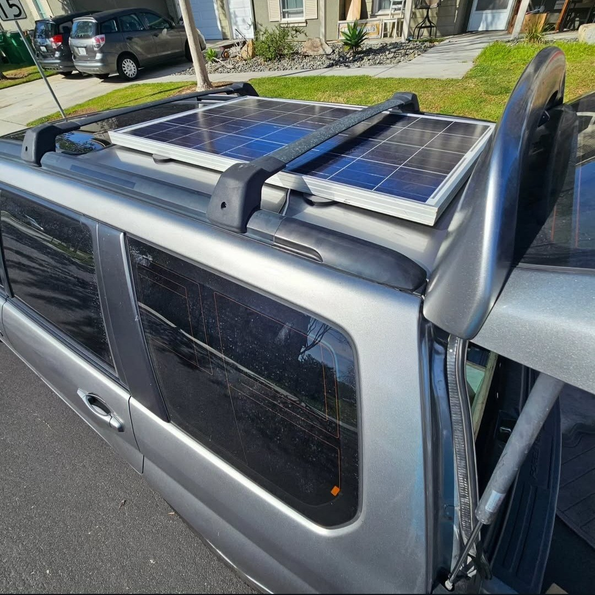

Custom Solar-Powered Air Compressor Installation
Installed a solar-powered air compressor system for on-the-go tire inflation, preserving space and vehicle balance without external modifications.
Challenge:
Subaru Foresters, like many all-wheel drive vehicles, require that the spare tire matches the dimensions of the primary tires to prevent drivetrain damage due to unequal rotational masses. Typically, these vehicles are equipped with a full-size spare in the rear compartment. However, modifications to my vehicle, including a lift and larger tires, rendered the standard spare impractical as it would no longer fit in the spare tire compartment in the rear of the vehicle. Carrying an oversized spare on the roof or rear bumper was not a viable solution due to concerns over affecting the vehicle’s low center of gravity and fuel efficiency, and the inconvenience and expense of rear rack options.
Solution:
To address this, I engineered a compact, integrated solution that maintains the vehicle’s aesthetics and functionality without the need for external modifications. I designed and installed a system comprising a solar panel mounted on the roof with heavy-duty rubber-coated magnets, a deep cycle 12V battery, a 1000W inverter, and a battery isolator. This setup not only powers an air compressor but also provides additional 120V power for other needs, enhancing the vehicle’s utility while also charging the main drive battery.
The system includes a compressor pump, air tank, and all necessary fittings, controlled by a custom-designed electronic switch housed in a 3D printed enclosure. This enclosure and all components are installed with minimal modification to the vehicle: they are secured using existing mounting points with only one small alteration for electrical grounding.
Outcome:
The completed system operates efficiently between 70-100psi, allowing for on-the-go tire inflation using a patch kit stored within the same compartment. This solution ensures readiness for flat tires without compromising vehicle design or performance. For my exploring, there's always a tire shop within 50 or so miles. I guess there's always the chance of a sidewall puncture but we'll attempt to mitigate that by staying on road like trails at the minimum. This is my daily driver after all.

